Five Francs
Lavrillier (1945-1952)
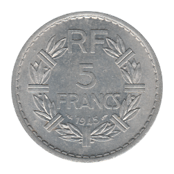 1945 Open 9, Thick Date
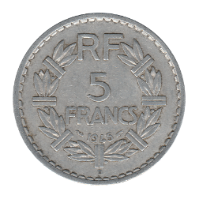 1945-B Thick Date
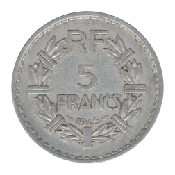 1945-C Thick Date
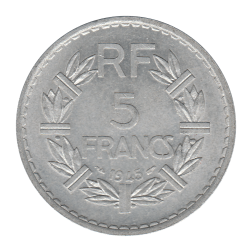 1945 Open 9, Thin Date
 1945-B Thin Date
1945-C Thin Date
1945-B Thin Date
1945-C Thin Date
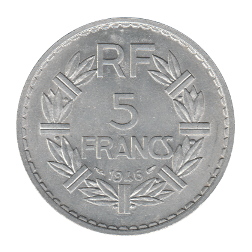 1946
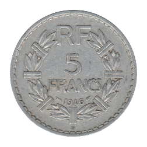 1946-B
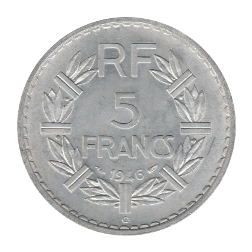 1946-C
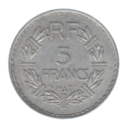 1947 Closed 9
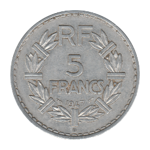 1947-B Closed 9
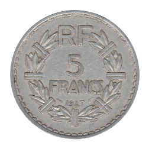 1947 Open 9
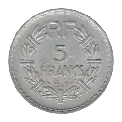 1947-B Open 9
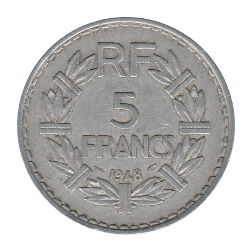 1948 Closed 9
1948-B Closed 9
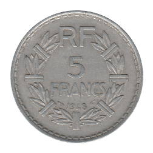 1948 Open 9
1948-B Open 9
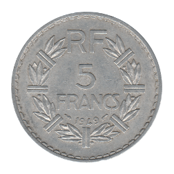 1949 Closed 9
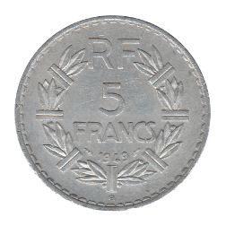 1949-B
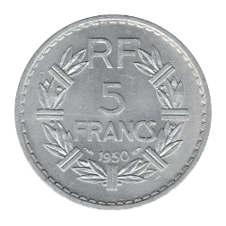 1950
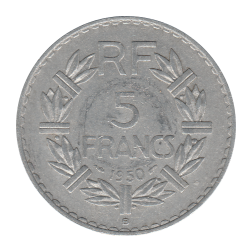 1950-B
Back to Fourth French Republic
Back to France Main Page
Back to Home